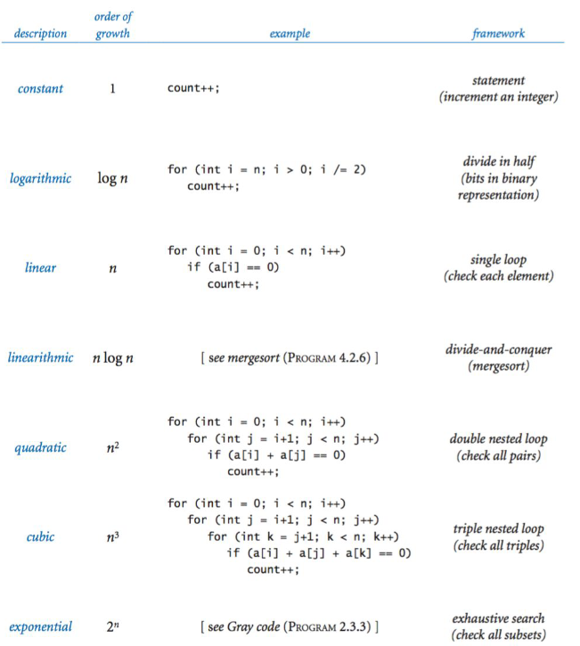
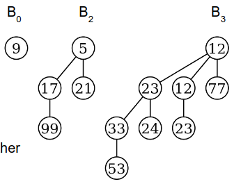
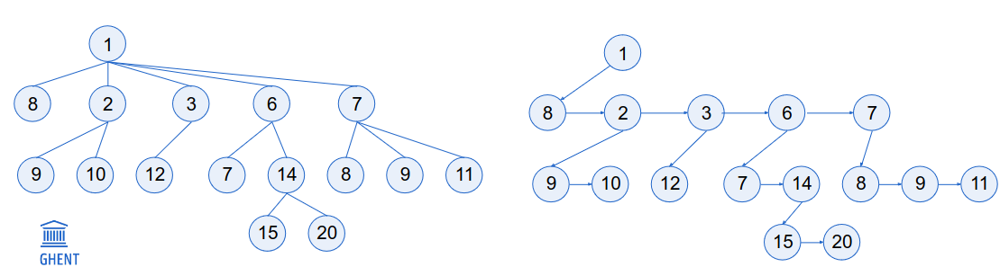
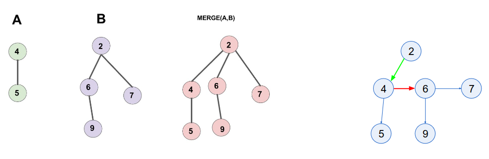
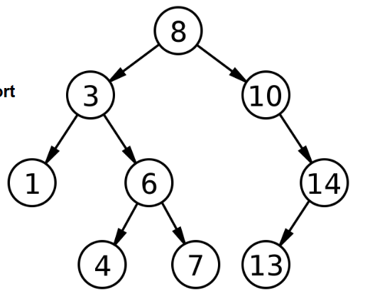
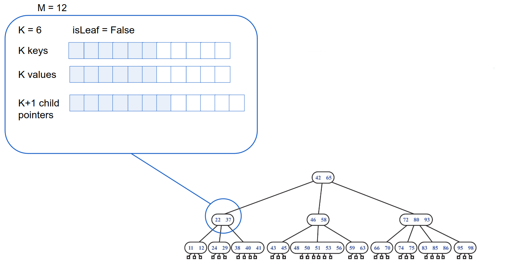
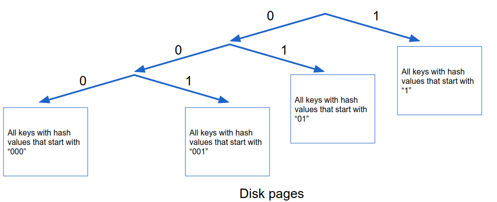
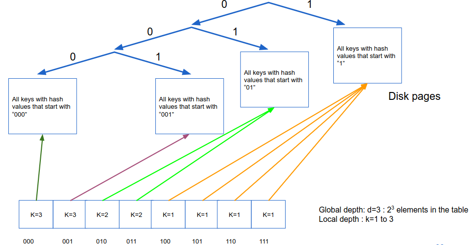
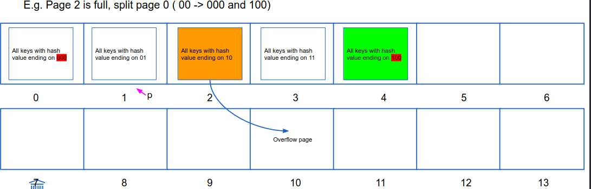

Summary
Table of Contents
1. Efficiency of Algorithms
Theoretical analysis of the required number of primitive operations as a function of the input size
- Best case: Ω(n)
- Average case: Θ(n)
- Worst case: O(n)
1.1. Big O
Big O: Express the complexity of an algorithm as function of the input size. (Not an exact number)
Common functions:
- Constant: O(1) : constant time, regardless of the input size
- Logarithmic: O(log n) : we typically use O(lg n) to indicate the logarithm with base 2
- Linear: O(n)
- LogLinear: O(n log n)
- Quadratic: O(n²)
- Exponential: O(cn)
- Factorial: O(n!)

Figure 1: Table of growth functions
1.2. Different Criteria
- Cost of implementation (no use spending a lot of time implenting an efficient solution for a single run program)
- Benadering (worst case could be way to pessimistic)
- Memory efficiency could be more important
- Computer hierarchy
- Parallellism
- Operations on memory
2. Containers
Datastructure that doens’t make use of keys. The elements are either located using a sequence or they are stored on a specific place.
2.1. Array (tabel)
- Stores data by explicitly assigning a slot to place the data in.
- Continous area in memory
- Fixed size
| Operation | Efficiency |
|---|---|
| Add (amortized) | O(1) |
The total cost of adding n elements: \[\sum\limits_{i=1}^{n}{t_i} = n + \sum\limits_{j=0}^{\lceil\ln n\rceil - 1}{2^j} < n + 2n = 3n \]
2.2. Linked List
Chain of nodes. Each node stores some data and a pointer to the next node.
- Overhead of pointer in each node
- Data not stored in contiguous region in memory
| Operation | Efficiency |
|---|---|
| Add | O(1) |
| Remove | O(1) |
| Find | O(n) |
2.3. Stack
- LIFO
- Support
- Push
- Pop
- Check (if empty)
- opt: peek, dupe, swap
- Implement w/ array or ll
| Operation | Efficiency |
|---|---|
| Push | O(1) |
| Pop | O(1) |
2.4. Queue
- FIFO
- Support
- Add
- Remove
- Check
Circular array (2 pointers + modulo calc)
Operation Efficiency Add O(1) Remove O(1)
2.5. Deque
- Double ended queue. Can be used as stack and queue.
- Add/ remove supported on both sides.
- Implement w/ array/ double linked-list
Add and remove are O(1)
Operation Efficiency Add O(1) Remove O(1)
2.6. Tree
Collection of nodes that store the data, connected with edges (no edges).
- Degree: number of children
- Ordered tree: order of children matter
- Multiway tree: children have fixed index (can use array/ll of pointers to point to children)
- Binary tree: Node stores just two pointers (max 2 children)
2.6.1. Traversal
- Depth first (DEZ): go all the way down before processing the next sibling
- preorder: First root, then left subtree, then right subtree
- inorder: First left subtree, then root, then right subtree
- postorder: First left subtree, then right subtree, then root
- Breath-first (BEZ): visit every node on a level before going to a lower level
- Best first: Children have different priority’s
2.7. Graph
Collection of n nodes connected with m edges. The edges might have a weight (neural networks)
2.7.1. Storing a graph
- Adjecency matrix
- NxM matrix, each element indicates weight or presence of a connection between nodes.
- Efficient to retreive weight between nodes
- Not efficient to store
- Undirected graph: only store triangular matrix
- Adjecency lists
- Matrix representation is not efficient for sparse graphs
- Store for each node a list with an identification of the neighbor
3. Priority Queues
Every element in container has a priority (high priority == small number). Supports:
- Add()
- Remove(), returns element with highest priority
- isEmpty()
- Peek(), return highest priority without removing it.
Trivial implementations:
- Ordered array: Add = O(n), Retrieve = O(1)
- Unordered array: Add = O(1), Retrieve = O(n)
3.1. (binary)Heap
Complete binary tree where all elements follow the heap property. (height = log n)
- Complete binary tree: all levels filled completely (except last, which is filled as left as possible).
- Heap properies
- Max heap: Value of parent is larger than children
- Min heap: Value of parent is lower than children
Heap operations:
- Adding to heap
- Insert element at index n+1 (leaf)
- Restore heap property by moving element up as long as priority isn’t correct (Worst case O(lg n))
- Removing root
- Put last element at place of root
- Restore heap property by switching with children until restored (Worst case O(lg n))
- Build heap by adding Add elements one by one to an initialy empty heap. This requires n-1 operations, each operation might require moving the root. (worst case O(n lg n))
- Build heap by merging smaller heaps Two smaller heaps and an temporary root can be merged into a new singular heap. To accomplish this, the root has to rotated with the root of its subheap with largest child to restore heap propery (worst case O(n)).
| Operation | Efficiency |
|---|---|
| Add | O(lg n) |
| Remove (root) | O(lg n) |
| Build (Add) | O(n lg n) |
| Build (Merge) | O(n) |
3.2. Binomial queues
Binomial queue is a set of binomial trees. A binomial tree \(B_h\) is defined by its height h:
- There is only a single binomial tree with this height
- A single node is a binomial tree with height 0
- \(B_h\) consists of two \(B_{h-1}\) trees where one is the leftmost child of the other
Each binomial tree follows heap property. Name binomial: n=13 :(bin)1101: \(B_3 + B_2 + B_1\)

Figure 2: Image of binomial queue
3.3. Pairing heap
Tree structure that follows heap property but isn’t necessarily a complete tree.

Figure 3: Image of pairing heap
Pairing heap merge:
- Compare root elements
- Tree with largest root becomes left child of other tree O(1)
- Adding an element is seen as a special case of merging

Figure 4: Image of pairing heaps merging
Removing the root:
- Tree becomes multiple subtrees
- Merge subtrees into new tree
- Naive O(n)
- Two-pass O(lg n)
- Merge pairs of trees from left to right
- Merge all trees into one from right to left
Decreasing priority of element:
- Remove subtree (element to decrease is root of subtree)
- Change value
- Merge (O(1))
| Priority queue | Merge | Add | Remove | Decrease priority |
|---|---|---|---|---|
| Binomial queue | O(lg n) | O(1) | O(ln n) | |
| Pairing heap | O(1) | O(1) | O(ln n) | O(1) |
4. Basic dictionaries
Dictionaries support dictionary operations (find, add, remove) that use the key to localize the data.
4.1. Dictionary
Maps a key to a value
4.1.1. Directly addressable array (eg freq table)
- Keys convertable to indices (don’t store key)
- O(1) performance for all operations
- Dupes? store linked list in stead of value
4.1.2. Unordered array
- Search: Linear O(n)
- Add: O(1)
- Remove:
- Find element O(n)
- Move all sequential elements O(n) or replace with last element O(1)
4.1.3. Ordered array
- Search: binary search O(lg n)
- Add: Find location, move alle elems O(n)
- Remove:
- Find elem O(n)
- Move all sequential elems into place O(n)
4.1.4. List
- Unordered linked list
- Search: O(n)
- Add: O(1)
- Remove: O(1)
- Ordered by search frequency
- Put each accessed element in front or switch it with its predecessor.
- Putting elements in front was not efficient with an array implementation.
- Ordered list:
- Not possible to do binary search, only sequential access: O(n)
- Add: search O(n) + insert O(1)
- Remove: search O(n) + remove O(1)
5. Hash tables
Another dictionary (find, add, remove) which uses a hash function to translate a key to an index.
\[ hash = hashfunc(key)\] \[index = hash % array_size \]
Given a key, all dictionary operations are O(1).
5.1. Collisions
It is very possible that a hash function returns the same index for different keys:
5.1.1. Chaining
Use linked lists to deal with collisions.
- Separate chaining
Store a linked list at every collision. (Table of linked lists)
- Retrieve:
- O(n) worst case (every thing stored on same index)
- number of slots ≈ number of elements -> O(1)
- #slots/#elements = load factor (α)
- Add O(1)
- Remove O(1)
- Retrieve:
- Coalesced chaining
Table of list nodes
- New datapoint goes in any available slot and keep a pointer to that slot
- No need to dynamically allocate data
- Sometimes implemented with a separate region for overflowed data
- Retrieve: Calculate hash func and follow pointers if necessary
- Add: Calculate hash func, in case of collision, use free slot
- Remove: (lazy) store a flag to make clear that it’s overwritable
5.1.2. Open addressing
- Like coalesced chaining, insead upon collision, a new hash is calculated
- linear probing: keep looking in next slot \[(h(s) + i)\: mod\: m\;\; (for\: i=0,1,...,m-1)\]
- Quadratic probing: make bigger jumps over time \[(h(s)+c_1i+c_2i^2)\: mod\: m\;\; (for\: i=0,1,...,m-1)\]
- Double hashing: Use 2 different hash functions \[(h(s) + ih'(s))\: mod\: m\;\; (for\: i=0,1,...,m-1)\]
- Tradeoff between compute time and storage
5.2. Hash functions
A good hash function:
- Every index has equal chance
- Likeliness that 2 different keys result in same index is i/m (singular uniform hashing)
5.2.1. Fixed hashfunction
There are 2 kinds of fixed hashfuntion:
- Deviding
- Most common
- \(h(s)= s\: mod\: m\)
- Choise of \(m\) is important
- if \(m\) is even: even keys get even index (bad)
- if \(m=2^i\): index is last i bits of key (bad)
- if \(m=10*i\): bad
- Good: prime numbers -> far away from powers of 2
- If the key consists of multiple words it is best practice to use a different hash function for each word: \[s=\langle e_1e_2...e_k\rangle\] \[h(s)=(h_1(e_1) + h_2(e_2) + ... + h_k(e_k))\; mod\; m \]
- Multiplying
- Multiply key with constant value \(C (0 < C < 1)\) \[h(s) = \lfloor m(sC - \lfloor sC \rfloor)\rfloor\]
- Value of \(m\) is no longer important, usualy \(m=2^i\)
- Value of \(C\) is important, \(C \approx (\sqrt{5}-1)/2\) yields good results
5.2.2. Universal hashing
For every key, use a different (random) hashfunction. Creating a family of functions:
- Choose a prime number \(p (\geq k)\)
- Generate \(a \in [1, p-1]\) (random)
- Generate \(b \in [0, p-1]\) (random) \[h_{a,b}(s)=((as+b)\;mod\;p)\;mod\;m\]
- This family contains \((p-1)p\) hashfunctions
6. Binary search trees
BST is another implementation of a dictionary that takes care of some shortcommings viz. the order of the keys. A BST is a binary tree where every node contains a key and a value. Every nodes complies with the following conditions:
- keys in left subtree are smaller than or equal as node
- keys in right subtree are bigger than or equal as node.
In order traversal of tree results in sorted keys: Tree sort

Figure 5: Image of binary search tree
6.1. BST
6.1.1. Retreiving element
Implementation:
- if key == node; done
- if key < node; Go left subtree
- if key > node; Go left subtree
- O(h) efficiency
6.1.2. Retreiving min or max value
- min: keep following left subtree
- max: keep following right subtree
- O(h) efficiency
6.1.3. Retreiving successor:
- Travel in-order
- O(h) efficiency
6.1.4. Adding value
Values are always added as leaves.
- if value \(\leq\) key; go left subtree
- if value \(\geq\) key; go right subtree
- No subtree? add as child
- O(h) efficiency
6.1.5. Deleting value
- Lazy-deletion: flag item as deleted
- Node without child: remove
- Node with 1 child: child becomes child of node’s parent
- Node with 2 children:
- Replace node with in-order successor (smallest node of right subtree)
- a) Copy data
- b) Copy nodes
- O(h) efficiency
6.1.6. Height of tree
- worst case: h = O(n)
- Average:
TODO
6.2. Threaded tree
- Every node has 2 pointers (2n total)
- Only n-1 pointers needed -> 2n - (n-1) = n+1 pointers are not used
- Use empty pointers to point to predecessor and successor
- Store a flag to differentiate between normal pointer and pre/successor
- It does not require a stack to traverse the tree -> memory efficient
6.3. Randomized search tree
The problem with BST is that the sequence of the operations (add/remove) dictate how the tree looks. Randomized search tree is a data structure that combines the properties of binary search trees and heap structures, using randomization to maintain balance and efficient operations.
6.3.1. Treap (tree + heap)
- Every new node gets a random priority
- Inintialy, the element gets added to the tree as if it was an ordinary BST.
- After adding, it performs a check to validate the heap propirty (max-heap)
- If new node does not comply to the heap property, it gets rotated upwards
- Deleting a node works by setting the priority of node to the lowest value, it gets rotated until it becomes a leaf
| Operation | BST | Treaded tree | Randomized |
|---|---|---|---|
| Add | O(h) | O(h) | O(lg n) |
| Remove | O(h) | O(h) | O(lg n) |
| Find | O(h) | O(h) | O(lg n) |
6.4. Hash table vs Binary tree
- Hash tables only support the dictionary operations, BSTs also support operations involving the order of keys
- BSTs also support range search (find max,min)
- Efficiency hash tables are O(1) on average while BST operations are O(lg n) on average
- A BST is a dynamical structure, it can grow over time while a hash table is fixed and is expensive to grow.
7. External data structures
Big datastructures that need to be stored in external memory. Read and write operations, however, will be very slow. Efficient datastructures are thus designed to keep IO operations to a minimum. We can once again split de structures up into to approaches:
- Tree structures
- \(B\) -tree
- \(B^+\) -tree
- Hashing
- Extendible hashing
- Linear hasing
7.1. \(B\) -trees
- Extension of binary search tree: an external balanced search tree.
- Very large n: to keep the depth of the tree low, we store a large number ( 50-10 000s) of keys in each node
- The keys are sorted
- Keep the tree balanced: all leaves are on the same level.
- Properties:
- Internal node has at most \(m\) children
- Internal node has at least \(\lceil m/2 \rceil\) children
- Internal node with \(k+1\) children contains \(k\) keys.
- Leaves have at least \(\lceil m/2 \rceil - 1\) keys and at most \(m-1\) keys
- Leaves are on the same level
- Root has at least two children unless he is a leaf
- Each node can store m-1 keys

Figure 6: Image of B-tree
7.1.1. Find
- Same as binary search, but there are more than 2 paths.
- Root node is always in memory, other nodes will get loaded in when needed
- For a given node, we have to search the key in the sorted list of keys: linear search O(m) or binary search O(lg m)
- We continue this until we find the key or end up at an empty slotWe have to load all the nodes along the path in memory: \(O(\log_{\lceil m/2 \rceil}n)\) disk operations. At each node, we have to execute O(m) CPU operations
7.1.2. Add
- Keys are added to leaf
- Search for the key and add it to the table of the leaf
- If the table of the leaf now contains m elements: split the table in two and move half of the keys to a new node on the same level. Insert an entry in the parent table, potentially moving values to the right.
- If this parent node is full: split it in two and add an entry (middle key) to its parent table.
- Worst case: this has to continue all the way until the root. If the root is full, we split the root and add a new level on top
- B-trees grow from the top!!!
- Splitting a node requires three disk operations
- Worst case: We have to split all the nodes all the way up to the root: O(h) = \(O(\log_{\lceil m/2 \rceil}n)\) disk operations
- Splitting a node requires O(m) CPU operations
7.1.3. Remove
- The key is stored in a leaf:
- Remove the key.
- If the number of keys in the leaf becomes too small, merge back with a sibling, move a key from the parent down
- Revert the split operation
- The key is stored in an internal node:
- Replace the key with its predecessor (a leaf)
- Alternative: Lazy deletion
7.2. \(B^+\) -tree
- \(B\) -trees have a few disadvantages:
- Leaves allocate storage for child pointers even though they never have children
- Deleting an internal node is complicated
- Finding the successor and predecessor takes \(O(\log_{\lceil m/2 \rceil}n)\) disk operations
- \(B^+\) -tree
- Internal nodes are only used as an index to guide the search, all data is stored in the leaves
- The leaves form a linked list with increasing key values (sequence set)
- [+] Because internal nodes only need to contain keys and not values anymore, we can store more keys in them
- [+] Leaves do not contain (null) pointers to child nodes anymore -> They can also contain more keys + values
- [+] We can easily find the successor of a key
- [+] We can easily iterate over all values
[-]Internal nodes and leaves have a different structure, more complex to implement
7.3. External hashing
What if we just assign a disk page to each element in our hash table ?
- [+] Easy to retrieve the page given a key
[-]If there are a lot of collisions, we might need to load multiple pages from disk (chaining, open addressing)[-]Lots of storage wasted if a page is almost empty
7.3.1. Binary trie
- Use the bits of the hash value to descend a binary tree
- The leaves store references to disk pages

Figure 7: Image of Binary trie
7.3.2. Extendible hashing
- Instead of storing the trie explicitly, we store it in a table
- The longest path (global depth: d) determines the number of elements in the table (e.g. 3 in the example)
- Not all paths are equally long, each page has a local depth: k

Figure 8: Image of Extendible Hashing
- Find
- Hash the key, find the corresponding page and find the key in the page (linear search or binary search).
- Requires 1 disk operation
- Add
- Find the page and add the key
- If a page is full, we split the page according to the next bit of the hash of the keys
- If a page where k==d is full, we have to double the size of the table
- Delete
- Find the page where the key is stored and delete the key.
- We can merge two pages if together they contain less than m keys (the maximum number of keys).
- Avoid repeated merging and splitting
7.3.3. Linear hashing
- Use the d last bits of the hash of a key as the address of the page on disk
- Logical address, translated to a physical address by the operating system
- We split pages in sequential order when a page is full
- We do not necessarily split the full page but the next page in the sequence
- We keep track of which page to split next (p)
- We use an overflow page to deal with the additional keys

Figure 9: Image of Linear Hashing